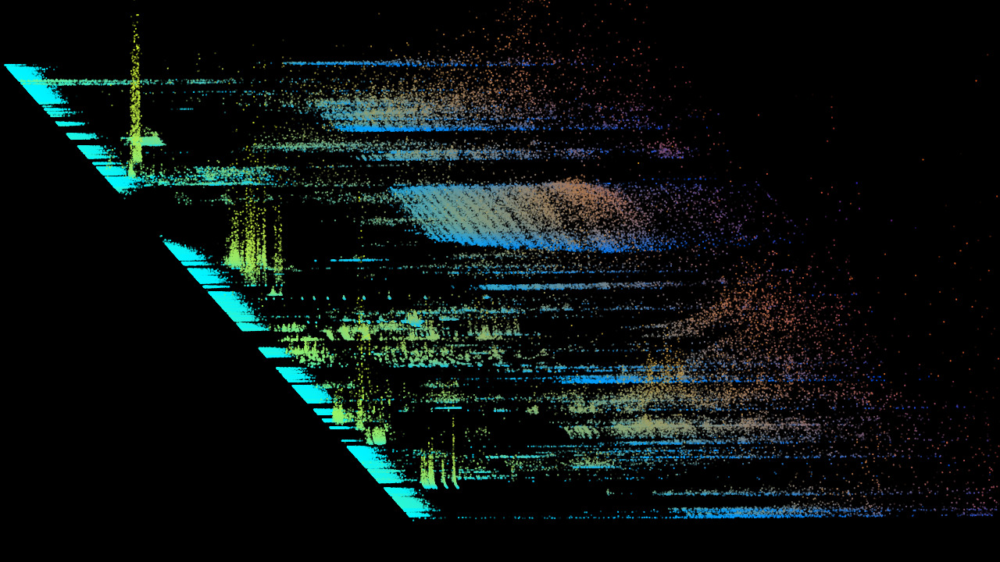
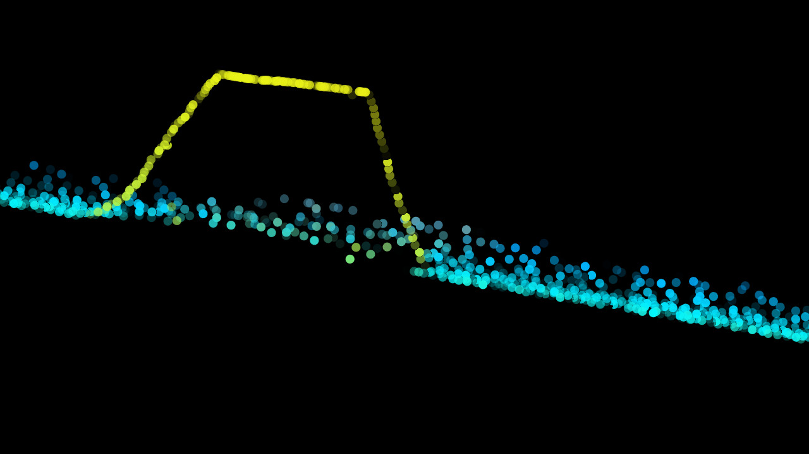

Times: Tues 18-20:30
Location: Studio
Instructor: Fede Camara Halac
Here is the course syllabus
In this class we will go through computer music synthesis essentials for music production and sound art. As composers, performers, or educators you will learn how to use audio and control signals, which are the base of interdiciplinary and collaborative art. We will also use this class to learn the basics of Pure Data (Pd).
If you have quesions about those things, send me an email (see below).
We will not see any code because Pd is a graphic programming environment, but we will go through some basic programming principles. You don't need to have previous experience with Pd or other programming languages. If you do have a experience with these languages, then the class should be informative because of the specific tools and techniques we will be covering. Plus there's all that music stuff we do. During the term, if you are having serious problems, please come to talk to me so that I can work with you or adjust the syllabus to get things back on-track.
The ultimate objective is to create a digital musical instrument based on a design taken from an analog synthesizer such as: MiniMoog, Apollo1, Volca Bass, etc.
Class meets on Tuesdays in Studio from 18:00 to about 20/20:30 or so.
We may make a few assignments throughout the term, mainly to spur class discussion. Hopefully some of the assignments may lead to your final projects for the class.
Here is a link to download the software that we may be using in class:
We will have several guest speakers in the class during the term. Watch for announcements on the course syllabus.
Nearly all of the Studio space and hardware resources are available for you to use. If you prefer to work on your own computer, that's perfectly fine. Otherwise you may sign up studios and machines for doing your work at the Studio using our on-line signup system. If you are having trouble getting access to the hardware or software you need, please let us know.
The course syllabus is located here.
We will put each class on its own website every week and link to it on the main syllabus page. We'll try to keep up with linking in class patches, examples and information, but we may fall behind. Please let us know when we do.
The best way to reach us is through e-mail: camarafede at gmail dot com
I will be holding office hours from 2-6 on Tuesdays, 9-12.30 Wed and Thursdays. I will also usually be around before or after class, in addition to being around the Studio on various days. If it looks like we need to schedule some more formal sessions for additional info, we will.
It's always a good idea to make an appointment to see me, even during my purported office hours, because I often have to run around campus like a maniac doing strange, computer-music stuff.
Grades will be based mainly on the final projects you do. We will discuss projects as the semester progresses. As noted above, we may be making some assignments throughout the term and discussing these in class. It'a always fun to see what you all can do.
I believe at this point in your career the last thing you should be worrying about is a grade. The main thing is to find something that you'd really like to do and then do it.
Hope you enjoy the class!
